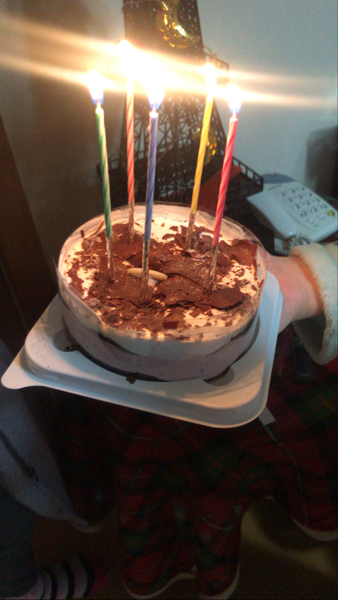

✩✩✩✩✩✩✩✩✩✩✩✩✩✩✩✩✩✩✩✩✩✩✩✩✩✩✩✩✩✩✩✩✩✩✩✩✩✩✩✩✩✩✩✩✩✩✩✩✩✩✩✩✩✩✩✩✩✩✩✩✩✩✩✩✩✩✩✩✩✩✩✩✩✩✩✩
|
2021.01
위와 같이 동생이랑 이맘때쯤 요리해 먹는걸 즐겨해서 파스타, 브라우니 등
여러 음식들을 자주 만들어 먹었었는데, 채소가 많이 남아있던 날 그걸로
엄마가 요리해 먹으라고 하셔서 채소 싫어하는 동생이
완성된 요리 위에 이거 싫다고 케챺으로 적었던 사진이다.
It's a picture of my sister who hates vegetables
writing that she doesn't like this on top of
the finished dish use a ketchup.
|
|
|
2021.01
같은 2021년도로 제가 처음 성인이 된 1월 1일에 가족들이 축하해주었던 사진 입니다.
케이크가 없어서 편의점 세 곳 갔다왔다고 말했던 동생 넘 고맙당 ㅋㅋ
This is the picture that my family congratulated me on January 1st,
when I first became an adult in 2021.
Thank you so much for the younger sister who said
she went to three convenience stores because there was no cake lol
。 ♡ 。 ♡。 ♡
♡。 ＼ ｜ ／。 ♡
I love you so much
♡。 ／ ｜ ＼。 ♡
。 ♡。 。 ♡。
|

|
|
|
|
2022.01
부산현대미술관 갔던 날의 사진 입니다.
이맘때쯤이면 혼자 미술관을 자주 가고는 했는데,
이 날은 엄마랑 같이 가서 구경했는데,
엄마는 을숙도 너무 멀다고 안 좋아하셔서 조금 슬펐음
전시는 보는 재미가 있어서 좋았었다 ㅎㅎ
This is the picture of the day I went to the Busan Museum of Modern and Contemporary Art.
I used to go to the museum by myself at this time of the year,
but I went to see it with my mom on this day, but my mom didn't like
Eulsukdo because it was too far away, so I was a little sad.
I liked the exhibition because it was fun to see it
|
|
2023.01
또 부산현대미술관 갔던 날의 사진 입니당.
보고 싶었던 전시가 있어서 자취한다고 떠나는 동생 데리고 간 날이다.
내가 좋아하는 디자이너분이 전시한 작품도 보고 체험도 했었던 것 같다
오는 길에 왜 그랬는지는 모르겠는데, 동생한테 짜증 내서 싸우고 따로 집 돌아왔었다..ㅎ
왜 그랬지??? 알 수 없네...
This is also a picture of the day I went to the Busan Museum of Modern and Contemporary Art.
I took my sister to see an exhibition that I wanted to see.
I think I saw and experienced the works displayed by my favorite designer.
I don't know why I did that on my way here,
but I got angry with my sister and fought and came back home separately..
|